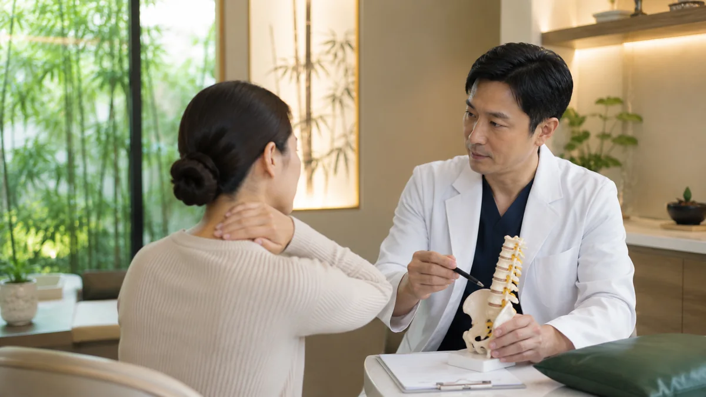

어떤 통증이 반복되나요?
목·어깨·허리처럼 자주 쓰는 부위는 일상 속 작은 습관의 영향을 많이 받습니다. 통증의 위치뿐 아니라 얼마나 오래 지속되었는지, 하루 중 언제 심해지는지, 특정 동작과 관련이 있는지를 함께 살펴보는 것이 중요합니다.

진료실에서는 이런 부분을 함께 확인합니다
통증의 위치와 실제 원인이 꼭 같지는 않을 수 있습니다
예를 들어 어깨 통증처럼 느껴져도 목의 긴장이나 자세 문제와 함께 나타나는 경우가 있고, 허리 통증도 단순히 디스크라는 이름만으로 설명하기 어려운 경우가 있습니다. 따라서 검사 결과와 현재 느끼는 불편을 함께 읽어야 합니다.
통증의 양상에 따라 접근도 달라집니다
증상의 양상과 반복 패턴에 따라 확인해야 할 점과 설명의 방향이 달라질 수 있습니다.
급성 통증
삐끗하거나 무리한 동작 이후 갑자기 생긴 통증은 현재의 움직임 제한과 통증 강도를 먼저 확인합니다.
만성 통증
수개월 이상 이어진 통증은 업무자세, 운동습관, 재발 패턴까지 함께 확인하는 것이 중요합니다.
반복성 통증
좋아졌다가 다시 심해지는 통증은 생활 속 반복 자극과 회복이 잘 되지 않는 이유를 함께 살펴봅니다.
현재 상태에 따라 이런 진료를 고려합니다
모든 진료를 일률적으로 적용하지 않고 현재 상태와 생활불편의 정도를 함께 고려합니다.
침 치료
통증 부위와 주변 긴장 상태를 보고 기본적인 치료를 진행할 수 있습니다.
부항 치료
근육이 많이 긴장된 부위나 순환이 떨어진 듯한 불편을 함께 살펴봅니다.
약침 상담
필요하다고 판단되는 경우 약침을 치료 선택지 중 하나로 고려합니다.
생활관리 안내
통증을 반복시키는 자세, 스트레칭, 활동 조절 방법을 함께 설명합니다.
이런 경우에는 병원 검사가 먼저 필요할 수 있습니다
집에서는 이렇게 관리해 보세요
진료와 함께 일상에서의 관리가 증상 변화를 이해하는 데 도움이 됩니다.
갑자기 무리하지 않기
좋아졌다고 바로 무거운 운동을 하기보다 통증이 줄어드는 속도에 맞춰 활동량을 조절합니다.
같은 자세 오래 유지하지 않기
컴퓨터, 운전, 스마트폰 사용처럼 한 자세를 오래 유지하는 시간을 줄입니다.
가벼운 스트레칭
통증이 심하지 않은 범위에서 짧고 부드럽게 움직여 주는 것이 도움이 될 수 있습니다.
재발 패턴 기록하기
언제 심해지는지, 어떤 동작 이후 아픈지 기록하면 재발 원인을 찾는 데 도움이 됩니다.
통증 클리닉에서 자주 묻는 질문
허리디스크가 있어도 한의원 진료를 받을 수 있나요?
가능합니다. 다만 현재의 증상과 기존 검사 결과에 따라 확인해야 할 부분이 다르므로 MRI나 CT가 있다면 함께 가져오시면 도움이 됩니다.
급성으로 삐끗했을 때도 바로 가도 되나요?
가능합니다. 다만 골절이 의심되거나 심한 외상, 신경학적 이상이 있는 경우에는 관련 검사를 먼저 권할 수 있습니다.
침을 꼭 여러 번 맞아야 하나요?
통증의 종류와 기간에 따라 다릅니다. 현재 상태를 확인한 뒤 예상되는 진료 간격을 안내드립니다.
약침은 누구에게나 하나요?
아닙니다. 약침은 모든 분에게 일률적으로 시행하지 않고, 필요하다고 판단되는 경우에만 치료 선택지로 설명드립니다.
운동은 쉬어야 하나요?
통증의 성격에 따라 다릅니다. 무조건 쉬는 것보다 어떤 운동을 얼마나 줄일지 조정하는 경우가 많습니다.
통증이 없어졌다가 다시 반복되면 왜 그런가요?
생활 속 반복 자극, 자세, 근육 사용패턴, 회복 부족 등이 영향을 줄 수 있어 재발 패턴을 함께 살펴보는 것이 중요합니다.
검사는 정상인데 계속 아플 수 있나요?
그럴 수 있습니다. 영상검사와 현재 느끼는 불편이 완전히 일치하지 않는 경우가 있어 증상과 생활환경을 함께 판단합니다.
진료 전 준비할 것이 있나요?
기존 검사자료, 복용 중인 약, 언제부터 아팠는지 간단한 메모가 있으면 진료에 도움이 됩니다.
현재 증상에 대해 편하게 문의해 주세요
전화, 네이버 예약, 오시는 길 안내를 통해 방문 전 필요한 정보를 확인하실 수 있습니다. 기존 검사자료나 복용약 정보가 있으면 상담에 도움이 됩니다.